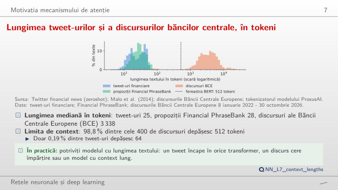
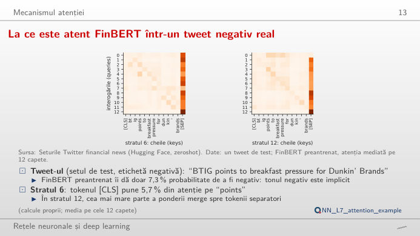
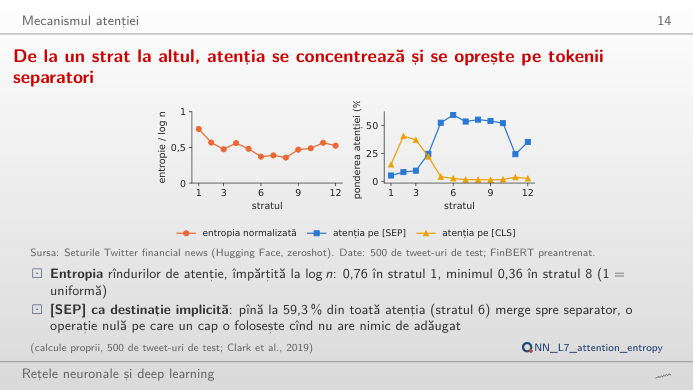
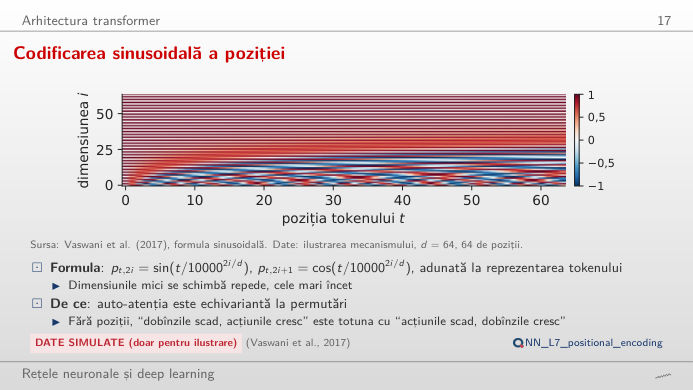
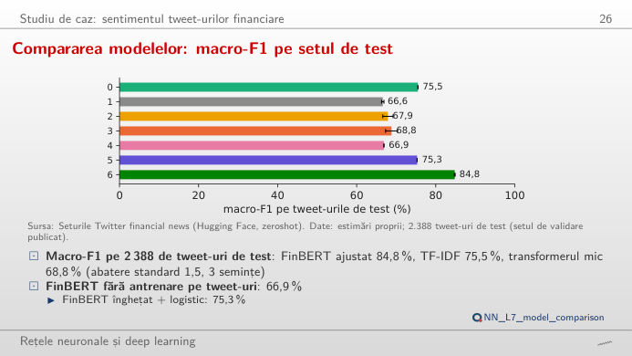
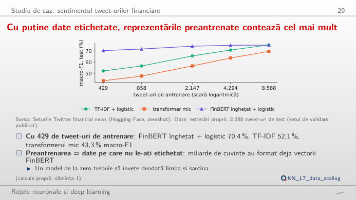

În stînga este slide-ul din curs, în dreapta aceeași figură, recalculată în browser cînd modificați un control. Hărțile de atenție sînt cele ale modelului preantrenat FinBERT (BERT, Bidirectional Encoder Representations from Transformers, antrenat suplimentar pe texte financiare) pe tweet-uri reale de test; rezultatele modelelor sînt cele din studiul de caz al cursului (2.388 de tweet-uri de test, trei clase: pesimist, optimist, neutru). Butonul ▶ modifică parametrul principal pas cu pas. Sub fiecare figură: o sinteză numerică, o întrebare pentru sală și Quantlet-ul cu codul figurii.
Motivația mecanismului de atenție · Mecanismul atenției · Arhitectura transformer · Studiu de caz: sentimentul tweet-urilor financiare
Motivația mecanismului de atenție
Lungimea tweet-urilor și a discursurilor băncilor centrale, în tokeni

Răspuns
Tweet-urile (mediana 25 de tokeni, maximum 82) și frazele din Financial PhraseBank (mediana 28) încap ușor; 98,8% dintre cele 400 de discursuri BCE au mai mult de 512 tokeni (mediana 3.338). Atenția compară fiecare token cu toți ceilalți, deci costul crește cu n²: un discurs median costă aproximativ (3.338/25)² ≈ 17.800 de tweet-uri mediane. Documentele lungi sînt de aceea tăiate în ferestre sau citite cu modele construite pentru contexte lungi.
Mecanismul atenției
La ce este atent FinBERT într-un tweet negativ real

Răspuns
În stratul 12, [CLS] își împarte atenția între „points”, „to”, „pressure” și „breakfast” (circa 14–17% fiecare); în stratul 6 pune 66% pe [SEP]. Multe capete își „parchează” atenția pe [SEP] cînd nu au nimic util de făcut. FinBERT clasifică tweet-ul ca neutru (75%), deși eticheta lui este pesimist: ponderile atenției arată pe unde circulă informația, nu de ce decide modelul, deci nu sînt o explicație.
De la un strat la altul, atenția se concentrează pe tokenii separatori

Răspuns
Produsul scalar a doi vectori cu 64 de dimensiuni are o împrăștiere care crește cu √d_k; fără împărțire, softmax se saturează: un singur token primește aproape toată ponderea, iar gradienții celorlalți dispar. Cu c = 1/8 (2^−3), cele mai multe rînduri pun aproape toată ponderea pe un token; cu c = 8 devin aproape uniforme (entropie / log n aproape de 1). Pe cele 500 de tweet-uri de test din curs, entropia normalizată scade de la 0,76 în stratul 1 la 0,36 în stratul 8.
Arhitectura transformer
Codificarea sinusoidală a poziției

Răspuns
Fiecare poziție primește un vector de 64 de sinusuri și cosinusuri, cu lungimi de undă de la 2π pînă la circa 2π·10.000^(62/64): primele perechi se schimbă repede, ultimele încet, ca acele unui ceas. Produsul scalar a doi vectori de poziție este maxim cînd pozițiile coincid și scade cu distanța, deci pozițiile apropiate seamănă. În studiul de caz, adăugarea pozițiilor în transformerul mic crește macro-F1 cu 0,9 puncte (intervalul de 95%: 0,1 – 1,7).
Studiu de caz: sentimentul tweet-urilor financiare
Compararea modelelor: macro-F1 pe setul de test

Răspuns
Da. Reeșantionarea tweet-urilor de test (bootstrap pereche pe predicțiile cu sămînța 1) dă o diferență de circa 9 puncte, cu un interval de 95% de aproximativ 7 – 11 puncte, care nu conține zero (în curs, media pe trei semințe: 9,3, intervalul 7,3 – 11,3). FinBERT înghețat + logistic față de TF-IDF dă un interval în jurul lui zero (în curs: −0,2, de la −2,5 la 2,0): un model mare preantrenat, folosit fără ajustare, nu este automat mai bun.
Cu puține date etichetate, reprezentările preantrenate contează cel mai mult

Răspuns
FinBERT înghețat cu o regresie logistică deasupra: 70,4% macro-F1 cu 429 de tweet-uri, față de 52,1% pentru TF-IDF și 43,3% pentru transformerul mic antrenat de la zero. Preantrenarea aduce cunoașterea limbii pe care datele puține nu o pot oferi. Cu toate cele 8.588 de tweet-uri, TF-IDF ajunge din urmă (75,5% față de 75,3%), iar transformerul mic rămîne în urmă (69,7%).
Tweet-uri: Twitter financial news sentiment (Hugging Face, zeroshot), setul de validare publicat folosit ca set de test. Financial PhraseBank: Malo et al. (2014). Discursuri: Banca Centrală Europeană (BCE), 8 ianuarie 2022 – 30 octombrie 2026. Tokeni: tokenizatorul WordPiece al modelului ProsusAI/finbert. Atenția: ProsusAI/finbert, 12 straturi × 12 capete, d_k = 64. Rezultatele modelelor, predicțiile de test (sămînța 1) și învățarea cu mai puține date: estimări proprii din curs (lectures/L7/results). Codificarea poziției: formula din Vaswani et al. (2017).